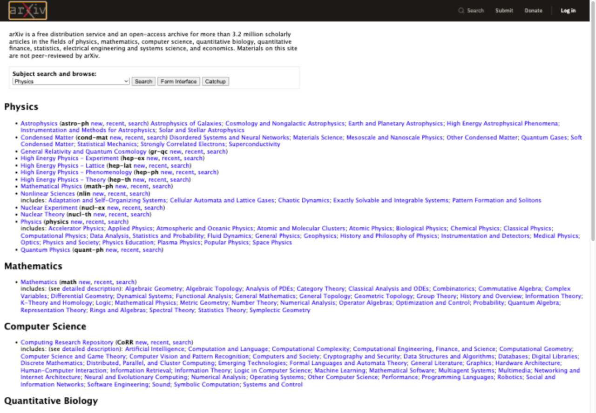
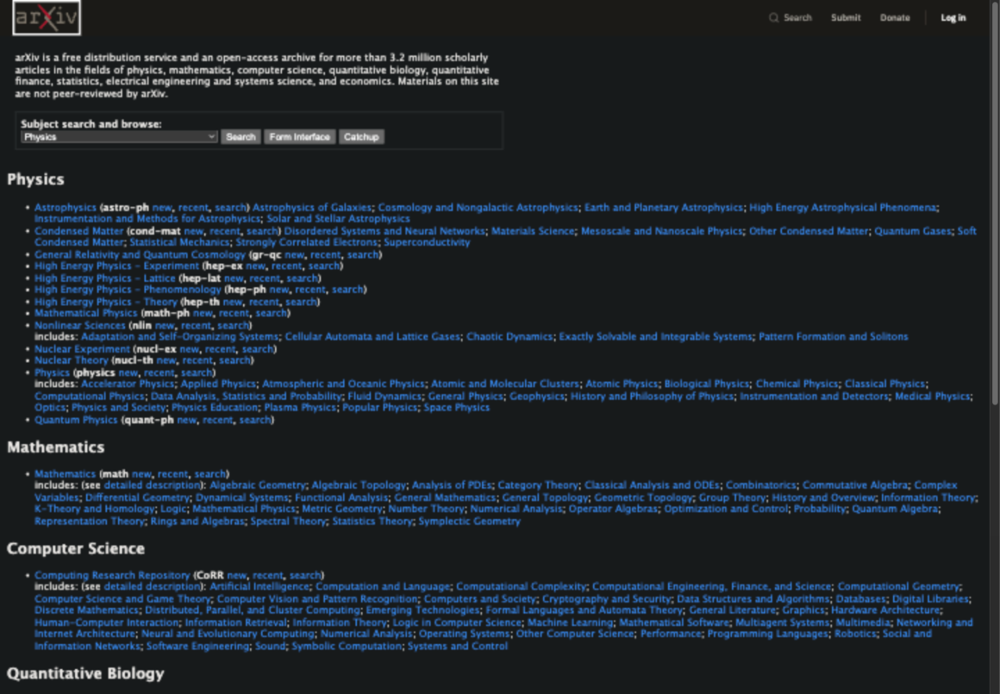

A quieter page.
Your call.
Turn a bright website dark with one toggle. Shade Toggle remembers that choice the next time you visit.
Version 0.1.0 prerelease. Chrome Web Store release is pending.
Same page. A softer light.
A real arXiv homepage preview


Captured from arxiv.org on October 28, 2026 with the bundled rendering adapter. These examples do not demonstrate an installed extension or its permission prompt. Read capture provenance. Website content and branding belong to their owners. No affiliation or endorsement is implied.
Small by design
Choose once.
Keep reading.
Open the extension on a website, enable Dark mode, and approve access for that site. The choice stays on your device, for that exact hostname.
Already-dark pages keep their own theme. Turn the toggle off to restore the original appearance.
Your browser, your data
No account.
No tracking.
Page structure and styles are processed locally by a bundled engine. Shade Toggle sends no page content or browsing information to a server.
There is no options screen, subscription or analytics. Read the privacy policy.
A few things to know
Where does it work?
Ordinary HTTP and HTTPS websites. Chrome's protected pages, the Chrome Web Store and PDFs cannot be changed. Some complex sites, inaccessible styles or closed shadow roots may not render completely.
What about accessibility?
The popup supports keyboard operation and reduced motion. Automated tests measure WCAG 2.2 AA contrast thresholds on controlled article, link, form, menu, dialog and focus examples. Measured minimums are 4.99:1 for fixture normal text, 3.07:1 for an input boundary, and 9.67:1 for popup text. These results do not certify ADA compliance or every website. Native dark themes are preserved, not audited. See measurements and limits.
Can I install it from the store?
Store publication is pending. Developers can build and load the source locally. Stable Chrome installation, its native permission prompt and uninstall behavior still require manual release checks.